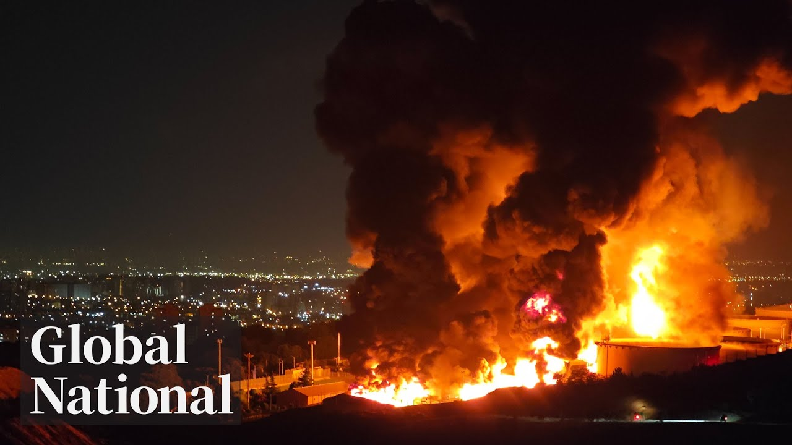

【优质全球新闻节目：Global News｜伊朗导弹袭击以色列医院及居民楼｜2025年6月19日】
Summary: Amid rising tensions in the Middle East, diplomatic channels remain open. Iran’s missile strike on an Israeli hospital has triggered a chain reaction, with the U.S. and Israel considering joint military action. Meanwhile, the trade dispute between Canada and the U.S. continues, and calls for reform in the competitive airline industry are growing louder. In other breaking news, a deadly mountain accident in Alberta and the rescue of a missing girl in Quebec have also made headlines.
摘要： 中东局势紧张之际，外交大门仍敞开。伊朗导弹袭击以色列医院引发连锁反应，美以考虑联合行动。加拿大与美国贸易战持续，航空业竞争改革呼声高涨。此外还有阿尔伯塔山难、魁北克走失女童获救等突发新闻。

⏱️ Estimated Reading Time: 33 min
📚 六级生词 📚 雅思生词 📚 托福生词 📚 专八生词 📚 SAT生词 📚 考研生词 📚 GRE生词 📚 高考生词
[Music] On this Thursday night, keeping the door open to diplomacy in the Middle East.
在这个周四夜晚，中东外交大门仍然敞开。
Iran can and should make a deal.
伊朗能够且应该达成协议。
When President Trump could decide whether to join Israel's war against Iran, the Iranian missiles that hit an Israeli hospital.
当特朗普总统考虑是否加入以色列对伊朗战争时，伊朗导弹击中了以色列一家医院。
And what could happen next inside Iran.
接下来伊朗境内可能发生什么。
Tariff timeline.
关税时间表。
What could happen next month if Canada doesn't resolve its trade war with the US?
如果加拿大无法解决与美国的贸易战，下月可能发生什么？
spreading their wings.
展翅高飞。
[Music] What the Competition Bureau says needs to happen to Canada's airline industry to benefit travelers.
[音乐] 竞争管理局提出加拿大航空业改革建议以惠及旅客。
Plus, some positive news.
此外还有好消息。
The bear finally shedding this burden after 2 years.
这只熊终于在两年后卸下了这个负担。
Global National with Donna Fzen.
这里是唐娜·弗雷森主持的《全球国家》。
Good evening and thanks for joining us.
晚上好，感谢收看我们的节目。
As Israel and Iran keep up their air strikes on each other, the US president is suggesting there is still time for a diplomatic solution.
当以色列和伊朗持续互相空袭之际，美国总统表示仍有外交解决的空间。
President Donald Trump has been weighing whether to join Israel in attacking Iran, claiming without hard evidence that Iran is close to producing a nuclear weapon.
特朗普总统正考虑是否加入以色列对伊朗的打击，他在缺乏确凿证据的情况下声称伊朗即将造出核武器。
Today, the White House said Washington and Thran are still in contact.
白宫今日表示华盛顿与德黑兰仍保持联系。
and the press secretary delivered a message from President Trump.
新闻秘书转达了特朗普总统的声明。
Based on the fact that there's a substantial chance of negotiations that may or may not take place with Iran in the near future, I will make my decision whether or not to go within the next two weeks.
鉴于未来可能与伊朗进行谈判的重要机会，我将在两周内决定是否采取军事行动。
No sign of diplomacy yet.
目前尚无外交进展迹象。
One of the Iranian missiles hit an Israeli hospital today and after that, Israel's defense minister vowed to step up attacks.
今日伊朗导弹击中以色列一家医院后，以国防部长誓言加强攻击。
Iran's supreme leader he says can no longer be allowed to exist.
他声称伊朗最高领袖不应继续存在。
Mike Armstrong is in Jerusalem.
麦克·阿姆斯特朗在耶路撒冷报道。
Mike. Well, Donna, a lot of people in this country went to bed last night with a missile barrage and woke up this morning to another.
唐娜，这个国家许多人昨晚在导弹袭击中入睡，今晨又被新一轮袭击惊醒。
Missiles were fired at targets over a wide area at about 7 a.m.
今晨7点导弹袭击了广大地区的目标。
There were sirens over much of the country, followed by the increasingly familiar thuds of Israel's Iron Dome.
全国多地响起警报声，随后是以色列"铁穹"系统愈发熟悉的拦截声。
Now, Israeli defenses did intercept multiple missiles.
以方防御系统确实拦截了多枚导弹。
This is the remnants of one that landed in the West Bank.
这是落在约旦河西岸的导弹残骸。
But on this day, multiple missiles made it through.
但今日有多枚导弹突破防御。
Israel's press office is asking foreign media not to identify locations.
以色列新闻办要求外媒不要披露具体地点。
We can say this is the aftermath of an explosion south of Tel Aviv.
这是特拉维夫以南爆炸后的场景。
And this was the aftermath of one east of the city center.
这是市中心以东爆炸的后果。
A high-rise was hit.
一栋高层建筑被击中。
We heard a boom.
我们听到轰隆巨响。
The boom was like from one to 100.
爆炸强度犹如从1飙升到100。
It was 100.
达到了最高值100。
Israeli officials say more than 270 people were admitted to hospital Thursday alone.
以色列官员称仅周四就有超270人送医。
That number is being called a miracle by some.
这个数字被一些人称为奇迹。
Not only were two densely populated neighborhoods hit, but another missile in the same wave appears to have made a direct hit on a hospital.
不仅两个人口稠密社区遇袭，同波次另一枚导弹似乎直接命中医院。
Officials at the facility about 70 kilometers southwest of Jerusalem say there is major damage and more than 70 were injured, but that it could have been worse.
这家距耶路撒冷西南70公里的医院官员表示损失严重且70多人受伤，但本可能更糟。
This specific building, because it's an older building, was evacuated by us in the past few days and the department that was directly hit was empty.
这栋老旧建筑前几天已被疏散，被直接击中的科室当时无人。
Iran's foreign minister posted on social media that the hospital wasn't the target.
伊朗外长在社交媒体称医院并非攻击目标。
In fact, he says it wasn't hit.
他声称医院未被击中。
It was damaged as missiles, he says, destroyed military and intelligence targets nearby.
他表示医院受损是因导弹摧毁了附近军事和情报设施。
There are also accounts on social media spreading reports complete with computer graphics that Israel operates a military base under the hospital.
社交媒体还有配电脑效果图的帖文称医院地下是以军基地。
It's shocking.
这令人震惊。
Something Israel Defense Forces deny.
以色列国防军对此否认。
I'm sorry. I know it's supposed to be I'm trying not to laugh.
抱歉，我知道不该笑但我忍不住。
It's it's crazy to say that Israeli officials are drawing a distinction with hospitals targeted in Gaza, insisting those were used by Hamas.
以官员辩称加沙医院被哈马斯利用，这种区分很荒谬。
They're targeting civilians because they're a criminal regime.
他们以平民为目标，因为这是犯罪政权。
They're the arch terrorists of the world.
他们是世界头号恐怖分子。
Israel's defense minister is calling the hospital attack cowardly and a war crime and says he's told his forces to increase the intensity of their attacks on targets in Iran.
以国防部长谴责医院袭击是懦弱的战争罪行，并下令加强对伊朗目标的打击强度。
Donna, Mike Armstrong in Jerusalem.
唐娜，我是耶路撒冷的麦克·阿姆斯特朗。
Thanks, Mike.
谢谢麦克。
It has been a week since Iran launched preemptive strikes against Israel, a surprise assault that knocked out many of Iran's air defenses and killed top military commanders and nuclear scientists.
伊朗对以色列先发制人打击已过一周，这次突袭摧毁伊朗多处防空系统并击毙高级将领和核科学家。
Israel claims Iran's nuclear program is the main target, even though the International Atomic Energy Agency says there is no proof Iran poses an imminent threat.
以色列坚称伊朗核设施是主要目标，尽管国际原子能机构表示无证据表明伊朗构成紧迫威胁。
Today, a senior Iranian general claimed all of its enriched nuclear material has been moved to what he calls a safe site.
今日伊朗高级将领称所有浓缩铀材料已转移至所谓"安全地点"。
a research reactor site in western Iran.
即伊朗西部某研究反应堆基地。
The latest Israeli strike against the country's nuclear facilities.
这是以色列对伊朗核设施的最新打击。
Some of those who can flee the bombings are going to countries like Armenia.
部分能逃离轰炸的民众正前往亚美尼亚等国。
This couple from Vancouver was in Iran to get married.
这对温哥华夫妇原在伊朗举办婚礼。
They say they will go back when it's possible.
他们称局势允许就会返回。
But with both sides talking retaliation and Washington mulling involvement, there is no end in sight.
但双方持续威胁报复，华盛顿考虑介入，冲突看不到尽头。
If you want to hit the Islamic Republic, you better you better have a plan to begin with.
若想打击伊朗伊斯兰共和国，必须事先制定完整计划。
You better have an endgame, and I don't see that.
必须有终极方案，而我未见此类准备。
That's the problem.
这就是问题所在。
This Iranian analyst says Friday's proposed meeting between Iran's foreign minister and three European counterparts is unlikely to have much effect.
伊朗分析人士称周五伊外长与三位欧洲外长的会晤难有成效。
buying time uh not really from Israel but uh making effort to do something with the US potentially basically it will be it will prolong the war.
这更多是为与美国周旋争取时间，实质上可能延长战争。
One of the Iranian regime's biggest allies Russia has warned the US not to directly join the conflict but Russian President Vladimir Putin is showing little sign of doing the same for Iran.
伊朗重要盟友俄罗斯警告美国勿直接参战，但普京总统未见同样维护伊朗的迹象。
Maybe 20% of the Israeli population also has Russian citizenship.
约20%以色列人同时拥有俄罗斯国籍。
Lots of the oligarchs around Putin are uh Jewish Israeli nationals.
普京周围许多寡头是以色列籍犹太人。
Experts say Israel's hopes of weakening Ayatollah Kam are not helped by the air strikes.
专家称空袭无助于以色列削弱哈梅内伊的目标。
Far from it.
恰恰相反。
A lot of uh deaths among women and children.
大量妇女儿童死亡。
Clearly, that's not the way to uh to strengthen uh calls for a regime change.
这显然无法加强要求政权更迭的呼声。
And what such a change would even look like is far from certain.
且变革后的前景也远未明朗。
Redmond Shannon, Global News, London.
伦敦的雷德蒙·香农为您报道。
With the airspace closed over Israel and Iran, the federal government says it is willing to help Canadians who want to leave the region.
以伊领空关闭之际，加拿大联邦政府表示愿协助本国公民撤离。
Foreign Affairs Minister Anita Anan says the government is planning commercial options for Canadians in Israel, the West Bank, and Iran, but they have to get to Jordan, Turkey, or Armenia first.
外长阿南称正为在以、约旦河西岸和伊朗的加公民安排商业撤离方案，但需先抵达约旦、土耳其或亚美尼亚。
Then she says there will be consular services available for them.
之后将提供领事服务。
Canadians in the region are strongly encouraged to register with Global Affairs Canada.
强烈建议该地区加公民向全球事务部登记。
A little later, we'll hear from some Canadians desperate to contact friends and family in Iran.
稍后将报道急于联系伊朗亲友的加公民处境。
We have some breaking news from Alberta.
插播阿尔伯塔省突发新闻。
One hiker has died and several have been injured in a rock slide in BA National Park.
班夫国家公园山体滑坡致1名徒步者死亡，多人受伤。
This is where it happened this afternoon at Bo Falls Trail near Bo Glacier Falls.
事故发生在下午的鲍河瀑布步道，靠近冰川瀑布。
That's about 100 kilometers north of the town of Ba along the Ice Fields Parkway.
位于班夫镇以北约100公里冰原大道沿线。
There are no pictures of the actual slide yet.
尚无滑坡现场图像。
RCMP say multiple hikers were caught in it.
皇家骑警称多名徒步者被掩埋。
Some highway closures are expected as emergency crews respond.
应急响应期间部分公路将封闭。
Skyler Peters is in BA tonight.
斯凯勒·彼得斯在班夫现场。
We still don't know the severity of how many people may have been involved, if any, are trapped under this rocklide or the severity of the injuries to those affected.
尚不清楚具体涉事人数及是否有人仍被埋，也不掌握伤者伤情。
We do understand many of the injured are being flown by Stars Air ambulance to area hospitals throughout the Bo Valley, including this one here in B.
据悉多名伤者正由STARS空中救护车送往包括本院在内的弓谷地区医院。
Physicians currently on standby being prepared to treat multiple hikers.
医护人员已就位准备救治多名徒步者。
First responders from several agencies, including RCMP, local fire and EMS, and emergency teams with both BA and Jasper National Parks were called to the site at about 1:30 p.m. local time.
皇家骑警、当地消防急救及班夫、贾斯珀国家公园应急队等多部门于下午1:30抵达现场。
The trail affected is a 9 kilometer long out and back trail considered moderate in intensity located roughly 40 kilometers east of Lake Louise along Highway 93, the Ice Fields Parkway.
事发步道为往返9公里的中级难度路线，位于路易斯湖以东约40公里93号冰原大道沿线。
That's a road that's expected to be closed intermittently to allow first responders to continue their work.
该公路将间歇性封闭以便救援。
Skyler Peters, Global News.
斯凯勒·彼得斯，全球新闻。
President Donald Trump's trade war is still on.
特朗普总统的贸易战仍在继续。
American tariffs on steel and aluminum remain a thorn in the side of Canada's economy.
美国钢铝关税仍是加拿大经济痛点。
Today, Prime Minister Mark Carney tried reassuring Canadian manufacturers he has a plan to help them as he tries to reach a new trade deal with the president.
总理马克·卡尼今日向加制造商保证有援助计划，同时寻求与特朗普达成新贸易协议。
McKenzie Gray reports.
麦肯齐·格雷报道。
The prime minister putting himself on the clock to solve his most pressing political challenge.
总理为自己设定时限解决最紧迫政治挑战。
seen progress that's been made, President Trump and I agree to pursue negotiations towards a deal within the coming 30 days.
鉴于已有进展，特朗普总统与我同意未来30天内推进谈判。
But if Trump and Carney can't cut a security and economic agreement by the July 21st deadline, the prime minister now says he's willing to increase tariffs on the US.
但若7月21日前未能达成安全经济协议，卡尼表示将提高对美关税。
Canada will adjust its existing counter tariffs on US steel and aluminum products on the 21st of July.
加拿大将于7月21日调整现行对美钢铝反制关税。
On June 4th, the Trump administration increased steel and aluminum tariffs to 50%.
6月4日特朗普政府将钢铝关税提至50%。
But that move didn't get Carney's elbows up.
但此举未激怒卡尼。
He kept Canadian tariffs at 25%, hoping to get a breakthrough at the negotiating table.
他维持25%加方关税，希望取得谈判突破。
A move the premier of Ontario supports.
安大略省长支持此举。
If the president comes and says, "We're putting 10% across the board." Well, we need to put 10% across the board and make sure that we we protect our manufacturers here.
若总统宣布全面征收10%关税，我们也需对等征税保护本国制造商。
We rely on partners.
我们依赖合作伙伴。
Carney attempting to give those protections by promising federal contracts can only go to suppliers from Canada and from reliable trading partners.
卡尼承诺联邦合同仅授予加拿大及可靠贸易伙伴供应商以提供保护。
But both the prime minister's office and the finance department couldn't say who those partners are and if the US is included.
但总理办公室和财政部均未明确具体伙伴名单及是否包含美国。
Something Unifor Canada's largest private sector union criticized for lacking specific detail.
加拿大最大私营工会Unifor批评该计划缺乏细节。
Steel industries and our workers.
钢铁产业和工人需要明确方案。
The prime minister also implementing new quotas on foreign steel that could be dumped into Canada, a longstanding American irritant.
总理还实施新钢铁进口配额制，这长期令美国不满。
We must reinforce our strength at home and safeguard Canadian workers and businesses from the unjust US tariffs.
我们必须增强国内实力，保护加工人和企业免受美国不公正关税影响。
The response from industry has been split, Donna, with the aluminum association saying the announcement strikes the right balance, but the steel producers and steel workers union say it falls short of what their industry needs.
业界反应分化，铝业协会称公告取得平衡，但钢铁生产商和工会认为未满足行业需求。
Okay, McKenzie Gray in Ottawa.
麦肯齐·格雷在渥太华报道。
Thanks.
谢谢。
There's a little more information tonight from police about how that three-year-old Quebec girl who was missing for three days was found.
警方今晚披露更多关于魁北克走失3天女童的获救细节。
The child who police have asked the media not to identify was spotted yesterday afternoon.
这名警方要求媒体不公开身份的女童于昨日下午被发现。
Dan Spectre explains what more we know.
丹·斯佩克特带来详细报道。
Police say she spent more than three days and nights alone in the heat and humidity beside Highway 417 in Eastern Ontario after being left there with no food and no water.
警方称她在东安大略417号公路旁高温潮湿环境中独自度过三天三夜，未进食饮水。
She's in the ditch.
她在沟渠里。
She was lying in the ditch.
她躺在沟渠中。
Captain Benoish says the three-year-old Montreal girl was spotted by an Ontario provincial police drone lying in tall grass that would have made her hard to spot from the road.
贝努瓦队长称安省警用无人机在深草丛中发现这名蒙特利尔女童，从路面难以察觉。
Officers then rushed to her.
警员迅速赶赴现场。
She put her hands up and she was uh talking with the officers.
她举起双手并与警员交谈。
Rish says OP officers quickly gave her mangoes and Gatorade.
里什称安省警员立即给她芒果和佳得乐。
Small children are particularly susceptible to heat stroke and dehydration.
幼儿极易中暑脱水。
Not having water for 3 days can be critical and can be can be lethal.
三天不饮水可能致命。
On Sunday, the three-year-old was last seen around 9:45 a.m. with her mother and Pet Chihuahua in Montreal near their home.
周日早9:45，女童最后被见到与母亲及宠物吉娃娃在蒙特利尔家附近。
Almost 6 hours later, her mother reported her missing 50 kilometers west in Coto Zulak.
约6小时后，其母在50公里外的科托祖拉克报失踪。
Monday, the dog was discovered dead on the side of a highway.
周一，狗的尸体在公路边被发现。
The girl's mother was arrested and charged with child abandonment.
女童母亲因遗弃罪被捕。
On Wednesday, police announced new information.
周三警方公布新线索。
The pair had been seen Sunday afternoon by an Eastern Ontario farmer.
东安大略一位农民周日下午曾见到母女二人。
Investigators narrowed their search and the girl was found along a highway at 200 p.m. in a rural area of Ontario about 150 kilometers west of Montreal.
调查缩小范围后，女童于下午2点在蒙特利尔以西150公里安省乡村公路旁获救。
Dr. Nafisa Ismile says at 3 years old, the girl will have the capacity to remember what happened.
纳菲莎·伊斯梅尔博士称三岁儿童有能力记忆此事。
How impactful that's going to be on her physical health, on her mental health will depend on the environment that she finds herself in going forward.
这对她的身心健康的影响将取决于她未来的环境。
The girl remains in hospital surrounded by family where she's doing well and has been sleeping a lot.
女孩仍在医院，家人陪伴，状态良好且睡眠很多。
Dan Spectre, Global News, Montreal.
丹·斯佩克特，环球新闻，蒙特利尔。
There is still no sign of two other young children who have been missing in Nova Scotia for nearly 7 weeks.
新斯科舍省两名失踪近7周的儿童仍无踪迹。
Today, the province announced a reward of up to $150,000 for information about the Sullivan siblings.
今天，该省宣布悬赏高达15万加元征集有关沙利文兄妹的线索。
Six-year-old Lily and her four-year-old brother Jack were reported missing from their home in Picto County on May 2nd.
6岁的莉莉和4岁的弟弟杰克于5月2日在皮克图县的家中被报失踪。
Extensive searches have taken place in the heavily wooded area around the property.
对该房产周围林木茂密的区域进行了大规模搜索。
Canada Post says it's reached an agreement with its second largest union.
加拿大邮政表示已与第二大工会达成协议。
The Crown Corporation says the new contract covers 8,500 employees who mostly manage post offices in rural Canada.
这家国有公司表示，新合同覆盖8500名员工，他们主要管理加拿大农村的邮局。
The agreement includes an 11% wage increase over three years.
协议包括三年内工资上涨11%。
Canada Post is still trying to settle a contract with its largest union, the Canadian Union of Postal Workers.
加拿大邮政仍在试图与最大工会——加拿大邮政工人联合会达成合同。
It represents about 55,000 workers.
该工会代表约5.5万名员工。
The sky's the limit.
天空才是极限。
Coming up, how the federal government is being urged to increase competition in Canada's airline industry.
接下来，联邦政府如何被敦促促进加拿大航空业竞争。
There goes another SpaceX rocket.
又一枚SpaceX火箭升空。
The unmanned rocket exploded during a routine test flight in Texas Wednesday night, sending a giant fireball into the sky.
这枚无人火箭于周三晚间在得克萨斯州例行试飞时爆炸，巨大的火球冲向天空。
Local authorities are calling it a catastrophic failure.
当地当局称其为“灾难性故障”。
SpaceX, owned by Elon Musk, calls what happened to Starship 36 a major anomaly.
埃隆·马斯克旗下的SpaceX将星际飞船36号的事故称为“重大异常”。
It is the fourth loss of a SpaceX rocket this year.
这是今年SpaceX损失的第四枚火箭。
Canada's competition bureau is urging the federal government to allow foreign ownership of domesticonly airlines to try to spur competition in the highly concentrated industry and Gabiola has more on how that could help bring down flight costs in an industry commanded by Air Canada and WestJet.
加拿大竞争局敦促联邦政府允许外资控股国内航空公司，以推动高度集中的行业竞争，加比奥拉将报道此举如何帮助降低由加拿大航空和西捷主导的行业票价。
What we heard from Canadians is a desire for more more choice, better prices, more services, including the number of flights.
我们听到加拿大民众希望更多选择、更低价格、更多服务，包括航班数量。
The Competition Bureau's solution, no surprise, more competition in a market dominated by the big two.
竞争局的解决方案不出所料——在两大巨头主导的市场中增加竞争。
Air Canada and WestJet together account for roughly half to 3/4 of all domestic passenger traffic at Canada's busiest airports.
加拿大航空和西捷合计占加拿大最繁忙机场国内客运量的约50%至75%。
An improving trend, market concentration has gone down by 10% between 2019 and 2023, reflecting the growing presence of Porter and Flare.
市场集中度在2019至2023年间下降10%，呈现改善趋势，反映出波特航空和Flare航空的崛起。
Among the bureau's recommendations, raising the cap on foreign ownership of carriers that only fly within Canada from the current 49% to 100% ownership.
竞争局的建议包括将国内航线航空公司的外资持股上限从49%提高至100%。
This could create a new entrant with deep pocketed backers.
这可能催生拥有雄厚资金支持的新竞争者。
Introducing just one more carrier can lead to meaningful results.
仅新增一家航空公司就能带来显著效果。
A 9% reduction in price uh on average.
平均票价下降约9%。
But not everyone's convinced this would make a big difference.
但并非所有人都认为这会带来重大改变。
Looking at the long history we've seen of the airline industry over the last 30, 40 years, it's been problematic to get beyond a couple big players.
纵观过去三四十年航空业历史，超越几家大公司一直很困难。
Lynx Air, a recent example of a smaller carrier that tried and failed.
山猫航空是近期尝试失败的小型航空公司案例。
It's not clear if there's a business case in this geographically vast country with a small population.
在这个地广人稀的国家，商业模式是否可行尚不明确。
How would foreigners make money from it?
外资如何从中盈利？
Because if you're not making money, it's not an attractive place to invest in.
若不盈利，就不是有吸引力的投资地。
A new carrier could be a gamecher in underserved and remote communities, but major urban centers are already running close to capacity.
新航空公司可能改变服务不足的偏远社区，但主要城市已接近饱和。
Montreal, Toronto's, Vancouvers of our country don't even have enough slots to add a lot of competition.
蒙特利尔、多伦多、温哥华等城市甚至没有足够空档增加大量竞争。
Flare Airlines tells Global News, now it's time for action.
Flare航空告诉环球新闻，现在是行动的时候。
The government must begin implementing the report's most impactful recommendations without delay.
政府必须立即实施报告中最具影响力的建议。
Now, it's up to lawmakers to decide if these suggestions come to fruition.
现在取决于立法者是否落实这些建议。
Donna and Gabi in Toronto.
多娜和加比在多伦多报道。
Thanks, Anne.
谢谢，安妮。
Mexico took a direct hit today from Hurricane Eric.
墨西哥今日直接遭受飓风埃里克袭击。
The category 3 storm made landfall in the western part of Waka State.
这场三级飓风在瓦卡州西部登陆。
Strong winds and heavy rains triggered flash flooding, destroyed restaurants, and stranded dozens of fishing boats.
强风暴雨引发山洪，摧毁餐馆，数十艘渔船搁浅。
The storm is now losing steam as it tracks across Mexico's mountains and should dissipate tomorrow.
飓风穿越墨西哥山区后减弱，预计明天消散。
And this black bear in Michigan has finally been freed from its uncomfortable collar.
密歇根州这只黑熊终于摆脱了不适的项圈。
It was first spotted with a plastic lid around its neck in 2023.
2023年首次发现它颈部卡着塑料盖。
The bear remained elusive, though, only occasionally being spotted on trail cameras.
但这只熊行踪隐秘，仅偶尔被追踪相机拍到。
Biologists were finally able to track it down earlier this month.
生物学家本月早些时候终于追踪到它。
They sedated it and managed to cut off that plastic lid and then released the bear back into the wild.
他们麻醉后成功取下塑料盖，将熊放归野外。
The threats against Jug Meet Singh's life ahead.
辛格面临的生命威胁仍在继续。
His brother speaks out on the toll they took on the former NDP leader.
他的兄弟讲述这些威胁对这位前新民主党领袖的影响。
There's new insight into how threats against six in Canada affected the former federal leader of the NDP.
新披露的细节显示针对加拿大六人的威胁如何影响这位前联邦新民主党领袖。
Nearly two years ago, Jugme Singh was put under heavy RCMP security because of warnings an alleged agent of the Indian government was spying on him.
近两年前，辛格因警告称印度政府特工涉嫌监视他而受到加拿大皇家骑警严密保护。
Now Singh's brother is speaking about the toll that took both politically and personally.
如今辛格的兄弟讲述这在政治和个人层面的影响。
Teria Isri reports.
特丽亚·伊斯里报道。
In December 2023, Jugme Singh and his wife welcomed their second daughter.
2023年12月，辛格与妻子迎来第二个女儿。
Not pictured, the team outside the room keeping close watch.
未入镜的是门外严密监视的安保团队。
His daughter was born in a hospital, swarming with RCMP and security services.
他的女儿出生时医院布满皇家骑警和安全人员。
Shortly before her birth, the former NDP leader received a warning his life was in danger.
女儿出生前不久，这位前新民主党领袖接到生命威胁警告。
They didn't specify the source, but the intimation was that it was a foreign threat.
未明确来源，但暗示是外国威胁。
Last week, Global News reported a suspected agent of the Indian government with alleged ties to the Lawrence Bishnoi gang was watching Singh's every move.
上周环球新闻报道，一名涉嫌与劳伦斯·比什诺伊团伙有关的印度政府特工在监视辛格一举一动。
Canadian authorities accuse New Delhi of using that same crime group to commit violence in Canada and silence its political opponents.
加拿大当局指控新德里利用该犯罪团伙在加实施暴力并压制政敌。
Allegations India denies.
印度否认这些指控。
The level of security that my brothers provided was could only be in response to an organized targeted attack.
我兄弟受到的安全保护级别只能针对有组织的针对性袭击。
Constant security and a climate of fear that likely interfered with his ability to perform political duties and even see his family.
持续的安全措施和恐惧氛围可能影响他履行政治职责甚至与家人见面。
I had to give details about who I am before seeing my own brother.
我见亲兄弟前必须详细说明身份。
No biking to Parliament Hill.
不能骑自行车去议会山。
Less time outside with his kids.
与孩子们户外活动时间减少。
Let's win this.
让我们赢得这场战斗。
Back then, Singh considered stepping down.
当时辛格考虑过辞职。
He's very resilient, but when it came to the fact that his loved ones and those around him, his kids, his wife could also be a threat, that's when I really saw the impact upon him.
他非常坚韧，但当所爱之人如孩子妻子也可能受威胁时，我才真正看到对他的影响。
And we're going to continue to fight for him.
我们将继续为他而战。
The former NDP leader is now out of politics.
这位前新民主党领袖现已退出政坛。
But for his family, Prime Minister Mark Carney's invitation to India's Narendra Modi is adding insult to injury.
但对他的家人而言，总理马克·卡尼邀请印度莫迪访加是雪上加霜。
The Indian government has targeted the then leader of a federal national party in Canada.
印度政府曾针对加拿大联邦政党时任领袖。
Where is the red line?
红线在哪里？
When is enough is enough?
何时才足够？
Tia Isri, Global News, Montreal.
蒂亚·伊斯里，环球新闻，蒙特利尔。
[Music]
[音乐]
Next, Iranians in Canada anxiously watching and waiting for news on their loved ones half a world away.
接下来，加拿大伊朗裔焦急等待万里之外亲人的消息。
Israel's attack on Iran is reverberating across the world, including on people who fled the regime in Iran and now live in Canada.
以色列袭击伊朗的影响波及全球，包括逃离伊朗现居加拿大的人们。
For them, friends and family are top of mind as they watch the two countries attack each other.
他们最牵挂亲友，同时目睹两国互相攻击。
Heather Urick's West spoke with Shri families about their hopes and fears.
希瑟·尤里克·韦斯特采访了 Shri 家庭的希望与恐惧。
Unable to speak with her family in Iran, Rose Garamsar can only watch over their photos and pray.
无法联系伊朗的家人，罗斯·加拉姆萨尔只能看着照片祈祷。
I have three aunts and an uncle who are currently in Thran.
我有三位阿姨和一位叔叔目前在德黑兰。
Um, on my husband's side, he has his mother and uh and his brother who are in Tehran.
我丈夫的母亲和兄弟也在德黑兰。
It's been 2 days since a near total internet blackout by Iran's government made communication impossible.
伊朗政府近乎全面断网已两天，无法通讯。
Though the family believes their loved ones are safe right now.
尽管家人认为亲人目前安全。
I just received message from my family that they're safe.
我刚收到家人报平安的消息。
They're out of Tehran right now and they're in safe place.
他们已离开德黑兰，身处安全地点。
For how long, no one knows.
能安全多久无人知晓。
to this family.
对这个家庭而言。
Israel's aggression is unjustified.
以色列的侵略毫无道理。
Their wish is for deescalation and a return to life as it was.
他们希望局势降级，回归正常生活。
I don't claim to speak for all Iranian people, but for me as a person who's experienced war, uh I believe that uh you know, this is something that the world doesn't need.
我不代表所有伊朗人，但作为经历过战争的人，我认为世界不需要这样。
But others within Canada's Iranian community feel differently once and for all.
但加拿大伊朗社区其他人持不同看法。
This regime needs to go.
这个政权必须终结。
So we will accept everything that is coming at us in order to ensure that this government goes.
为确保政府倒台，我们愿承受一切。
Gazal Kalarbig and Ekbal Kaiden also worry about family and friends in Iran right now, but believe the current authoritarian regime is a threat to their safety as well, pointing to the 2022 killing of Masa Amini, the young woman who died in hospital after Iran's morality police arrested her for violating the country's strict dress codes for women.
加扎尔·卡拉比格和埃克巴尔·凯登也担忧在伊亲友，但认为当前专制政权同样威胁安全，提及2022年玛莎·阿米尼之死——这名年轻女性因违反女性着装规定被道德警察逮捕后死于医院。
Her death sparked protests around the world.
她的死亡引发全球抗议。
But we don't like the civilian being hurt.
但我们不愿平民受伤害。
Nobody want a war.
没人想要战争。
We don't want a war.
我们不想要战争。
Though as the violence escalates, avoiding allout war feels less assured by the day.
尽管随着暴力升级，避免全面战争日益困难。
Heather, your ex West Global News Calgary.
希瑟·尤里克·韦斯特，环球新闻卡尔加里报道。
That is Global National for this Thursday.
以上就是本周四的《全球国家》。
I'm Donna Fzen.
我是多娜·弗岑。
Jeff Simple will be here at the anchor desk tomorrow.
杰夫·辛普尔明天将担任主播。
And tonight, we'll leave you with a tribute to Jeff.
今晚我们向杰夫致敬。
Tomorrow is his first day back after the birth of his daughter.
明天是他女儿出生后首日复工。
and it will be his first day back since winning the Canadian Screen Award as Canada's best national reporter.
也是他赢得加拿大银幕奖最佳国家记者后首日回归。
He won for his coverage of the aftermath of the October 7th attack on Israel.
他因报道10月7日以色列袭击后续获此殊荣。
So, double congratulations to you, Jeff.
所以双喜临门，杰夫。
He will see you tomorrow and I will see you again next week.
他明天与您相见，我下周再会。
Bye-bye.
再见。